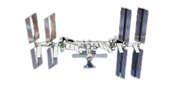
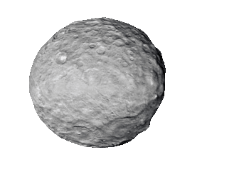
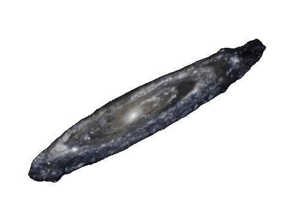

Wide Space
Wide Space is a website that allows you to see how far from the earth different objects in space are
Birds usually fly at a height of about 1.5km
The bird that flies the highest is the Rüppell's Griffon Vulture and it flies at about 11km height

Most commercial aircrafts fly at an altitude of about 11.5km
Their maximum certified altitude is between 12-13km


TSUBAME is a japanese satellite
It is the lowest orbiting satellite
The satellite orbited at an attitude of 167.4km

The international space station orbits the Earth at a height of 408km

Sputnik was the first satellite ever launched in orbit by the USSR at the height of 577km

The moon orbits the earth at a distance of 384,400 km
In that distance you can fit every planet in the solar system combined

The Queqiao relay satellite orbits the moon at a distance of 455,000 km from the Earth

Venus orbits the sun at around 91 million km away from Earth

The Sun is 148 million km away from the Earth

Mercury orbits the sun at a distance of 188 million km from the Earth

Mars orbits the sun at a distance of 289 million km from the Earth

Ceres is located nearly 403 million kilometers from the Earth

Jupiter orbits the sun at a distance of 893 million km from the Earth

Saturn orbits the sun at a distance of 1.6 billion km from the Earth
Uranus orbits the sun at a distance of 3 billion km from the Earth
Neptune orbits the sun at a distance of 4.6 billion km from the Earth

Pluto orbits the sun at a distance of 5.2 billion km from the Earth

The Andromeda galaxy is the closest galaxy to The Milky Way and it 2.5 million light years away from the Earth